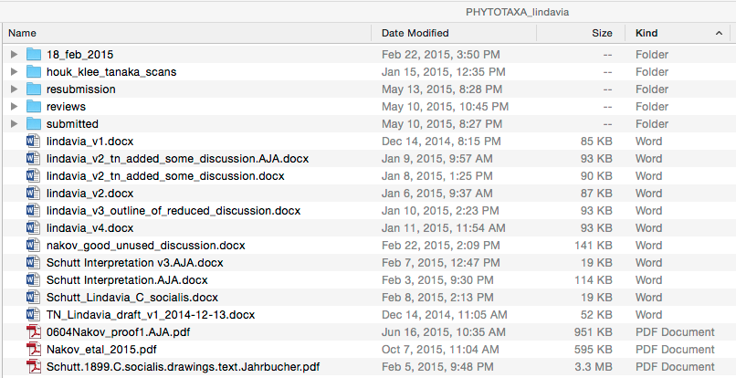
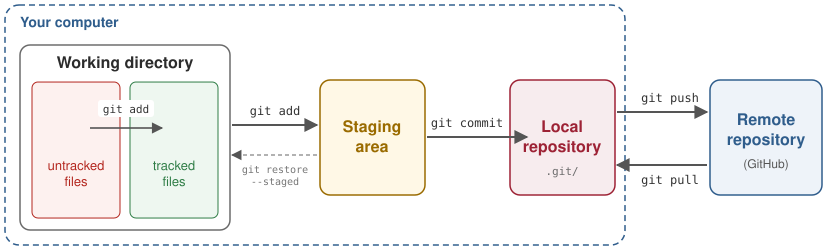
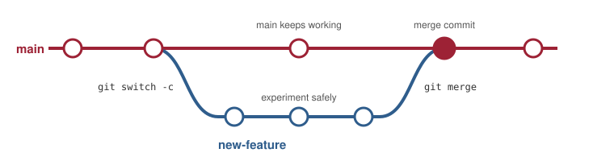
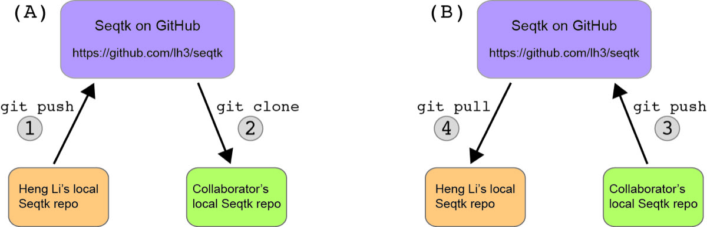

Chapter 5 Version control with Git and GitHub
In this chapter
- why scientists should use version control
- how to install and configure Git
- the Git workflow: track, stage, and commit
- how to undo changes, ignore files, and see what changed and when
- how to retrieve an old version of a file
- how to experiment safely with branches, and how to resolve a merge conflict
- how to back up and share your work on GitHub
A note about GitHub. Git and GitHub aren’t the same thing. Git is free, open-source software that runs on your own computer. GitHub is a company that hosts Git repositories online, and Microsoft has owned it since 2018. Some people have started moving their projects off GitHub. Concerns include Microsoft’s ownership and the use of code hosted on GitHub to train Microsoft’s AI models, including the Copilot coding assistant, without the permission of the people who wrote the code. Some are moving to alternatives such as Forgejo, a community-run platform that you can host yourself or use through services such as Codeberg. Things are changing quickly, and it’s not yet clear where the field will settle. For now, though, GitHub is still the most established and widely used platform, and it’s the one this chapter uses. Everything you learn about Git itself works the same way on any of them.
5.1 Why version control?
Every project changes over time. At the bench, you keep a lab notebook so you always have a before-and-after record: the PCR stopped working, so you changed the annealing temperature; a cheaper kit came out, so you switched. Code needs the same kind of record:
- a file format changes, so you update your code to read it
- you find a bug, so you fix it
- you add a feature, and something that used to work stops working
Without a system, most of us end up keeping versions by renaming files
(Figure 5.1). This works, sort of, until you can’t
remember which file is the latest, what changed between v2 and
v3_outline_of_reduced_discussion, or whose edits are whose. Things get
particularly messy when you collaborate.

Figure 5.1: Version control by file name. One manuscript, many versions, two collaborators.
A version control system solves this problem properly. Git, written by Linus Torvalds (who also wrote Linux) to manage thousands of programmers working on Linux at the same time, is by far the most popular one. Git lets you:
- keep snapshots of your project, so you can trace the origin of a bug and roll back a bad change
- trace how your code evolved, and why, which helps make your work reproducible
- keep your code organized and available after people leave the lab
- share your code with others and work on it together
Git is the standard tool for version control in data science and bioinformatics. Nearly every bioinformatics program you’ll download comes from a Git repository.
Further reading. This chapter follows the Git chapter of Vince Buffalo’s Bioinformatics Data Skills (O’Reilly, 2015). For a complete reference, see the free book Pro Git. Both are listed in the References.
5.2 Installing and configuring Git
Check whether Git is already installed:
If it isn’t, here’s how to install it (more details):
| System | How to install Git |
|---|---|
| Mac | Run xcode-select --install (Apple’s command-line tools include Git), or brew install git |
| Linux / WSL | sudo apt install git (Ubuntu and Debian) |
Git commands all take the form git <subcommand>. Before you use Git, tell it
who you are. Git records your name and email address with every change you
make. You only need to do this once per computer:
git config --global user.name "Your Name"
git config --global user.email "you@uark.edu"
git config --global init.defaultBranch main # name the first branch "main"
git config --global core.editor nano # the editor Git opens for messages
git config --global color.ui true # color-coded output
git config --list # check your settings--global stores these settings in the file ~/.gitconfig, so they apply to
every project on that computer. Use the same email address you use (or will
use) for GitHub.
Why init.defaultBranch? Every repository starts on a default branch
(Section 5.11). Git originally called it master; GitHub and most
projects now call it main. Without this setting, Git still uses master and
prints a hint every time you create a repository. You’ll see both names in
tutorials. They mean the same thing.
5.3 Creating a repository
A repository (or repo) is a project directory whose history Git is
keeping track of. Let’s make one called bio_project, then turn it into a Git
repository with git init:
Initialized empty Git repository in /Users/you/bio_project/.git/git init creates a hidden directory, .git, where Git stores the entire
history of your project:
.
..
.gitYou never need to touch anything inside .git. But don’t delete it: that
would delete your project’s history.
Don’t make a repository inside another repository. Run git init once,
at the top level of a project. If git status (below) works in a directory
where you haven’t run git init, you’re already inside a repository.
5.4 Track, stage, commit
Figure 5.2 shows how Git works. Files in your project
directory (the working directory) are either untracked (Git ignores
them) or tracked (Git is watching them). When you’ve made changes worth
keeping, you git add them to the staging area, and then git commit
stores a permanent snapshot of everything that’s staged in your local
repository. Later in the chapter, you’ll git push your commits to a
remote repository on GitHub.

Figure 5.2: The Git workflow. git add starts tracking a file and stages its changes; git commit stores the staged changes in the repository; git push and git pull send and receive commits from a remote repository.
5.4.1 Checking the status of your files
Let’s add some files to bio_project. The touch command creates empty files:
On branch main
No commits yet
Untracked files:
(use "git add <file>..." to include in what will be committed)
README
data/
nothing added to commit but untracked files present (use "git add" to track)git status is the command you’ll use most. It tells you which branch you’re
on (main, the default), what’s happened since your last commit, and often
what to do next. Right now Git sees some new files and a new directory, but
it isn’t tracking any of them.
5.4.2 Tracking files with git add
git add tells Git to start tracking files:
On branch main
No commits yet
Changes to be committed:
(use "git rm --cached <file>..." to unstage)
new file: README
new file: data/README
Untracked files:
(use "git add <file>..." to include in what will be committed)
data/sample1.fasta
data/sample2.fastaThe two README files are now tracked, and their current versions are staged: they’ll be included in the next commit. The FASTA files are still untracked.
5.4.3 Staging changes with git add
Now let’s change README:
On branch main
No commits yet
Changes to be committed:
(use "git rm --cached <file>..." to unstage)
new file: README
new file: data/README
Changes not staged for commit:
(use "git add <file>..." to update what will be committed)
(use "git restore <file>..." to discard changes in working directory)
modified: README
Untracked files:
(use "git add <file>..." to include in what will be committed)
data/sample1.fasta
data/sample2.fastaREADME now appears twice: once under Changes to be committed and once
under Changes not staged for commit. That’s because Git staged a snapshot
of README when we ran git add, before we added that line. If we commit
now, the commit will hold the empty README, not the new version.
To include the new line, stage README again:
On branch main
No commits yet
Changes to be committed:
(use "git rm --cached <file>..." to unstage)
new file: README
new file: data/README
Untracked files:
(use "git add <file>..." to include in what will be committed)
data/sample1.fasta
data/sample2.fastaSo git add does two things:
- starts tracking a file that Git isn’t tracking yet
- stages the current changes to a file that Git is already tracking
Changes are staged as they were when you ran git add. Anything you
change after git add isn’t included in the next commit unless you
git add the file again. git status tells you when that’s the case.
5.4.4 Storing changes with git commit
git commit stores a snapshot of everything that’s staged, along with a
message that describes the change:
[main (root-commit) f5b9975] Initial import
2 files changed, 1 insertion(+)
create mode 100644 README
create mode 100644 data/README
On branch main
Untracked files:
(use "git add <file>..." to include in what will be committed)
data/sample1.fasta
data/sample2.fasta
nothing added to commit but untracked files present (use "git add" to track)That’s it: the two README files are safely stored in the repository. The
seven characters after main (and root-commit, meaning this is the first
commit) are the start of the commit’s ID. Git computes a unique ID for every
commit from its contents (a SHA-1 checksum, like the ones in Section
4.5). Your IDs will differ from the ones in this book.
If you leave off -m "message", Git opens your editor so you can write the
message there. Save and exit, and Git makes the commit.
Why have a staging area at all? You’ll often be working on several files at once. Some changes will be finished, others not. Staging lets you choose exactly which changes go into each commit, so each commit is a meaningful step in your project (“Fix the GC-content calculation”) rather than a random snapshot of everything you happened to be working on.
Writing good commit messages
Your commit messages are the history of your project. Six months from now, “Fix off-by-one error in exon coordinates” will mean something; “stuff” will not (Figure 5.3).
, CC BY-NC 2.5.](images/04-git/xkcd-git-commit.png)
Figure 5.3: Commit messages over the life of a project. xkcd.com/1296, CC BY-NC 2.5.
- Write a short summary, about 50 characters or less, that says what the commit does: “Add GC-content function”, “Fix crash on empty FASTA files”.
- Commit often, in small, related chunks. One commit, one idea.
- Don’t commit broken code to
mainif you can help it. That’s what branches are for (Section 5.11).
5.5 Undoing changes
Let’s add a line to README and stage it:
On branch main
Changes to be committed:
(use "git restore --staged <file>..." to unstage)
modified: README
Untracked files:
(use "git add <file>..." to include in what will be committed)
data/sample1.fasta
data/sample2.fastaChanged your mind? Git tells you how to unstage the file with
git restore --staged:
On branch main
Changes not staged for commit:
(use "git add <file>..." to update what will be committed)
(use "git restore <file>..." to discard changes in working directory)
modified: README
Untracked files:
(use "git add <file>..." to include in what will be committed)
data/sample1.fasta
data/sample2.fasta
no changes added to commit (use "git add" and/or "git commit -a")The change is no longer staged, but it’s still in the file. To throw the
change away entirely and put the file back the way it was at the last commit,
use git restore without --staged:
The README file for my project
On branch main
Untracked files:
(use "git add <file>..." to include in what will be committed)
data/sample1.fasta
data/sample2.fasta
nothing added to commit but untracked files present (use "git add" to track)git restore file can’t be undone. It overwrites your file with the
version from the last commit. Any changes you hadn’t committed are gone for
good, just as with rm.
git checkout and git reset. git restore (and git switch, below)
arrived in 2019. Older tutorials, and Stack Overflow, do the same things with
git checkout -- file (discard changes) and git reset HEAD file (unstage).
Both still work.
5.6 Ignoring files with .gitignore
git status keeps reminding us that the FASTA files aren’t being tracked.
Suppose we don’t want them in the repository: they’re large and can be
downloaded again. List the files Git should ignore, one pattern per line, in
a file called .gitignore at the top of the repository:
On branch main
Untracked files:
(use "git add <file>..." to include in what will be committed)
.gitignore
nothing added to commit but untracked files present (use "git add" to track)The FASTA files have disappeared from the list. .gitignore itself is a file
worth keeping, so commit it:
[main 9457fc0] Ignore FASTA files in data/
1 file changed, 1 insertion(+)
create mode 100644 .gitignore
On branch main
nothing to commit, working tree cleanWorking tree clean means everything in the directory is either committed or
ignored. Here’s a typical .gitignore for a bioinformatics project:
# large data and results: keep these out of the repository
data/
results/
*.fastq.gz
*.bam
# junk your computer makes
.DS_Store
__pycache__/
.Rproj.user/
.RhistoryKeep big data files out of Git. Git is built for text files such as code, notes, and small tables. It keeps every version of every file forever, so large data files bloat your repository. GitHub won’t accept files larger than 100 MB. Back up data separately, and keep the commands that download or generate it (Section 4.3) in the repository instead.
5.7 Viewing history with git log
Let’s make one more commit:
[main 1abcb7f] Add project start date
1 file changed, 1 insertion(+)git log lists the commits, newest first:
commit 1abcb7f8eaf76fafe5faa768167c8aa071caad95
Author: Andrew Alverson <aja@uark.edu>
Date: Tue Nov 3 06:09:58 2026 -0600
Add project start date
commit 9457fc05e7d077613e229db0a41a1979743fd618
Author: Andrew Alverson <aja@uark.edu>
Date: Tue Nov 3 06:09:58 2026 -0600
Ignore FASTA files in data/
commit f5b9975ea7acbac9bd8bdf107eabe921265269ac
Author: Andrew Alverson <aja@uark.edu>
Date: Tue Nov 3 06:09:58 2026 -0600
Initial importEach commit has a full 40-character ID, an author, a date, and the commit message. A few useful options:
1abcb7f Add project start date
9457fc0 Ignore FASTA files in data/
f5b9975 Initial importcommit 1abcb7f8eaf76fafe5faa768167c8aa071caad95
Author: Andrew Alverson <aja@uark.edu>
Date: Tue Nov 3 06:09:58 2026 -0600
Add project start date
M README
commit 9457fc05e7d077613e229db0a41a1979743fd618
Author: Andrew Alverson <aja@uark.edu>
Date: Tue Nov 3 06:09:58 2026 -0600
Ignore FASTA files in data/
A .gitignore--oneline gives one short line per commit, --name-status lists the files
each commit changed (A added, M modified, D deleted, R renamed), and
-n 2 shows only the two most recent commits.
5.8 Seeing what changed with git diff
git diff shows exactly what you’ve changed. Add a line to README:
diff --git a/README b/README
index 62debb3..078409c 100644
--- a/README
+++ b/README
@@ -1,2 +1,3 @@
The README file for my project
Project started 2026-01-14
+Samples collected from Lake FayettevilleThe format is similar to diff -u (Section 1.10.7):
--- a/READMEis the old version and+++ b/READMEis the new one.@@ -1,2 +1,3 @@says which lines are shown: lines 1–2 of the old version and lines 1–3 of the new one.- Lines that start with
+were added, lines that start with-were deleted, and lines that start with a space are unchanged context. A line that you edited shows up as a deleted line followed by an added line.
By default, git diff compares your working directory to the staging area,
which shows changes you haven’t staged yet. What happens after
git add?
Nothing, because there are no unstaged changes left. To see what’s staged and
about to be committed, use git diff --staged:
diff --git a/README b/README
index 62debb3..078409c 100644
--- a/README
+++ b/README
@@ -1,2 +1,3 @@
The README file for my project
Project started 2026-01-14
+Samples collected from Lake Fayetteville
[main 089de23] Add sampling location
1 file changed, 1 insertion(+)5.9 Renaming and deleting files
If you rename or delete a tracked file with mv or rm, Git sees the old file
as deleted and the new file as untracked. Do it Git’s way instead, with
git mv and git rm, which make the change and stage it in one step. Let’s
give the README files a .md extension, which tells GitHub that they’re
written in Markdown (Section 5.12.5):
On branch main
Changes to be committed:
(use "git restore --staged <file>..." to unstage)
renamed: README -> README.md
renamed: data/README -> data/README.md[main 8d94229] Add Markdown extension to README files
2 files changed, 0 insertions(+), 0 deletions(-)
rename README => README.md (100%)
rename data/{README => README.md} (100%)git rm file deletes a file and stages the deletion. git rm --cached file
stops tracking a file but leaves it on your computer, which is handy when you
committed a file by mistake and want to add it to .gitignore.
5.10 Retrieving an old version
This is where version control earns its keep. Let’s make a change we’ll come to regret:
[main f66f3a6] Update README
1 file changed, 1 insertion(+)
f66f3a6 Update README
8d94229 Add Markdown extension to README files
089de23 Add sampling location
1abcb7f Add project start date
9457fc0 Ignore FASTA files in data/
f5b9975 Initial importgit commit -a stages every change to tracked files before committing, so
you can skip git add. It never adds untracked files. Use it only when you
know what you’ve changed.
To view an old version of a file without changing anything, use
git show commit:file. Instead of a commit ID, you can count back from the
most recent commit, which Git calls HEAD: HEAD~1 is one commit before,
HEAD~2 is two before, and so on.
The README file for my project
Project started 2026-01-14
Samples collected from Lake FayettevilleTo get that version back, restore the file from that commit:
The README file for my project
Project started 2026-01-14
Samples collected from Lake Fayetteville
On branch main
Changes not staged for commit:
(use "git add <file>..." to update what will be committed)
(use "git restore <file>..." to discard changes in working directory)
modified: README.md
no changes added to commit (use "git add" and/or "git commit -a")The old version is now in your working directory, as a change you can commit:
[main b3fd495] Remove bad advice from README
1 file changed, 1 deletion(-)The bad version is still in the history, in case you ever want it back. That’s
the point: once you’ve committed something, it’s very hard to lose. You can
use a commit ID in place of HEAD~1, for example
git restore --source=4f2a9c1 README.md. The first seven characters are
plenty.
Exercise 5.1 Turn the project you organized in Exercise 3.1 into a Git
repository (or make a new one; just not inside bio_project).
- Commit your
README.md,notebook.Rmd, and scripts. (If you made a new project, add aREADME.mdwith a sentence about it and a script or two from Chapter 1 or 2 first.) - Edit one of the files. Use
git diffto see what you changed. Stage the change and rungit diffagain, thengit diff --staged. Commit. - Make a change to a file, stage it, and then unstage it. Then discard the
change entirely. Check with
git statusafter each step. - Create a
.gitignorethat ignores adata/directory. Make the directory, put a file in it, and check thatgit statusdoesn’t list it. - Run
git log --oneline. Usegit showto view the first version of yourREADME.md.
5.11 Branches
A branch is an independent line of development. Branches let you try
something new (a major new feature, a different way of doing an analysis)
without any risk of breaking the version on main that works. If the
experiment works out, you merge it back into main. If it doesn’t, you
abandon the branch and main is unscathed. Collaborators can each work on
their own branch and merge their work in when it’s ready.

Figure 5.4: Working on a branch. You create a branch from main and make commits on it, while main carries on. When the work is done, you merge it back into main.
Branches are cheap: Git doesn’t copy your files to make one, so creating and switching branches is instant.
5.11.1 Creating, switching, and merging
git branch lists the branches, with a * next to the one you’re on. Let’s
make a new branch called readme-changes and switch to it:
* main
readme-changes
Switched to branch 'readme-changes'
main
* readme-changesNow make a change and commit it on readme-changes:
echo "Data are in data/, one FASTA file per sample." >> README.md
git commit -am "Describe the data directory"
git log --oneline -n 3[readme-changes 674ac65] Describe the data directory
1 file changed, 1 insertion(+)
674ac65 Describe the data directory
b3fd495 Remove bad advice from README
f66f3a6 Update READMEThe new commit exists only on readme-changes. If you switch back to main,
the new line disappears from README.md:
Switched to branch 'main'
Project started 2026-01-14
Samples collected from Lake FayettevilleIt’s not gone. It’s on the other branch. To bring it into main, switch to
the branch you want to merge into (main, which we just did) and then merge
the other branch:
Updating b3fd495..674ac65
Fast-forward
README.md | 1 +
1 file changed, 1 insertion(+)
Samples collected from Lake Fayetteville
Data are in data/, one FASTA file per sample.Because main hadn’t changed since we created the branch, Git simply moved
main forward to include the new commit, a fast-forward merge. If both
branches have new commits, Git combines them in a new merge commit, as in
Figure 5.4.
Once a branch is merged, you can delete it:
Deleted branch readme-changes (was 674ac65).Create and switch in one step. git switch -c new-branch creates a branch
and switches to it. (In older tutorials: git checkout -b new-branch.)
5.11.2 Merge conflicts
Git can merge changes to different files, or to different parts of the same file, on its own. But if two branches change the same lines of a file, Git can’t know which version you want. That’s a merge conflict, and you have to resolve it yourself. Conflicts sound scary, but they’re routine.
Let’s make one. On a new branch, change the first line of README.md and
commit:
diff --git a/README.md b/README.md
index 3bad163..d478709 100644
--- a/README.md
+++ b/README.md
@@ -1,4 +1,4 @@
-The README file for my project
+# bio_project
Project started 2026-01-14
Samples collected from Lake Fayetteville
Data are in data/, one FASTA file per sample.
[new-title 027f282] Shorter title
1 file changed, 1 insertion(+), 1 deletion(-)Meanwhile, back on main, we change the same line differently:
diff --git a/README.md b/README.md
index 3bad163..28da5e8 100644
--- a/README.md
+++ b/README.md
@@ -1,4 +1,4 @@
-The README file for my project
+# Diatom genomics project
Project started 2026-01-14
Samples collected from Lake Fayetteville
Data are in data/, one FASTA file per sample.
[main 41b549c] Better title
1 file changed, 1 insertion(+), 1 deletion(-)Now merge new-title into main:
Auto-merging README.md
CONFLICT (content): Merge conflict in README.md
Automatic merge failed; fix conflicts and then commit the result.Git merged what it could and stopped at the conflict. git status lists the
files that need attention:
On branch main
You have unmerged paths.
(fix conflicts and run "git commit")
(use "git merge --abort" to abort the merge)
Unmerged paths:
(use "git add <file>..." to mark resolution)
both modified: README.md
no changes added to commit (use "git add" and/or "git commit -a")Git marked the conflict inside the file:
<<<<<<< HEAD
# Diatom genomics project
=======
# bio_project
>>>>>>> new-title
Project started 2026-01-14
Samples collected from Lake Fayetteville
Data are in data/, one FASTA file per sample.The lines between <<<<<<< HEAD and ======= are the version on the branch
you’re on (main). The lines between ======= and >>>>>>> new-title are
the version from the other branch. To resolve the conflict:
- Open the file in your editor.
- Edit it so it says what you want. That might be one version, the other, or a combination.
- Delete the three marker lines (
<<<<<<<,=======,>>>>>>>). - Stage the file with
git addand commit.
head -n 1 README.md
git add README.md
git commit -m "Merge new-title, keeping the longer title"
git log --oneline --graph# Diatom genomics project
[main 02548d6] Merge new-title, keeping the longer title
* 02548d6 Merge new-title, keeping the longer title
|\
| * 027f282 Shorter title
* | 41b549c Better title
|/
* 674ac65 Describe the data directory
* b3fd495 Remove bad advice from README
* f66f3a6 Update README
* 8d94229 Add Markdown extension to README files
* 089de23 Add sampling location
* 1abcb7f Add project start date
* 9457fc0 Ignore FASTA files in data/
* f5b9975 Initial importgit log --graph draws the history of the branches and the merge commit that
joins them, just like Figure 5.4.
Changed your mind? In the middle of a conflicted merge, git merge --abort
puts everything back the way it was before you ran git merge.
Exercise 5.2 In your own repository:
- Create a branch, switch to it, and commit a change to a file. Switch back
to
mainand confirm that the change isn’t there. Merge the branch intomain, and delete the branch. - Create a merge conflict on purpose: make two branches that change the same
line of the same file differently, and merge one into the other. Resolve the
conflict, and look at the result with
git log --oneline --graph.
5.12 Remote repositories and GitHub
So far, everything has lived in a single repository on your own computer. A remote repository is a copy of your repository hosted somewhere else, usually on a service such as GitHub (others include GitLab and Bitbucket). A remote repository:
- backs up your work: if your laptop dies, your code and its entire history are safe
- shares your work: anyone can see your public repositories (this course’s materials are on GitHub)
- lets you collaborate: everyone works in their own local repository and exchanges commits through the shared remote
Git is a distributed version control system: every copy of a repository contains the full history of the project, and every collaborator can work, commit, and look through the history without a network connection. You only need the network to exchange commits:
git pushsends your new commits to the remote.git pullfetches new commits from the remote and merges them into your local repository.git clonecopies a remote repository, and its entire history, to your computer.
Figure 5.5 shows how this works for
seqtk, a popular toolkit for working with
FASTA and FASTQ files. Its author, Heng Li, pushes his changes to GitHub,
where a collaborator clones the repository (A). When the collaborator pushes a
change, Heng Li can pull it into his own copy (B). The history on GitHub is a
mix of commits from Heng Li and everyone else who contributes.

Figure 5.5: Collaborating through a shared repository on GitHub.
5.12.1 Cloning a repository
To get a copy of any public repository, find the green Code button on its
GitHub page, copy the URL, and use git clone:
Cloning into 'seqtk'...
remote: Enumerating objects: 409, done.
remote: Counting objects: 100% (33/33), done.
remote: Compressing objects: 100% (18/18), done.
remote: Total 409 (delta 18), reused 16 (delta 15), pack-reused 376 (from 3)
Receiving objects: 100% (409/409), 202.57 KiB | 901.00 KiB/s, done.
Resolving deltas: 100% (232/232), done.This creates a directory called seqtk that’s a complete Git repository,
.git directory and all. You can run git log to see its whole history. Many
bioinformatics programs are installed this way: clone the repository, then
build the program by following its README. To get the author’s latest changes
later, run git pull inside the directory.
5.12.2 Setting up GitHub
- Create an account at github.com. Pick a professional username: it will appear in the URL of everything you share. Students can also apply for the free GitHub Education benefits.
- Set up authentication. GitHub doesn’t accept your account password when you push from the command line. Use one of these instead.
Option 1: SSH keys (recommended). If you made an SSH key in Section 4.7, you can use the same key for GitHub. Print your public key and copy it:
On GitHub, go to Settings > SSH and GPG keys > New SSH key, paste it in, and save. Then test the connection:
Hi yourname! You've successfully authenticated, but GitHub does not provide shell access.With SSH, use the repository’s SSH URL, which looks like
git@github.com:yourname/bio_project.git.
Option 2: HTTPS with a personal access token. A token is a long, random
password that you create on GitHub, at Settings > Developer settings >
Personal access tokens
(instructions).
Give it an expiration date and only the access it needs (for a fine-grained
token, Contents: Read and write on your repositories). Copy the token right
away: GitHub shows it only once. When Git asks for your password, paste the
token. On a Mac, Git saves it in your Keychain so you don’t have to paste it
every time. With HTTPS, use URLs like
https://github.com/yourname/bio_project.git.
Treat a token like a password. Anyone with your token can do whatever the token allows to your GitHub account. Don’t put it in a script, email it, or commit it to a repository. If one leaks, delete it on GitHub and make a new one.
Working on the cluster? Git works the same way on the cluster. To push from
there, make an SSH key on the cluster with ssh-keygen and add that public
key to GitHub too. You can add as many keys as you like, one per computer.
5.12.3 Pushing a local repository to GitHub
To put bio_project on GitHub:
- On GitHub, click + (top right) > New repository.
- Name it
bio_project. Choose public or private. - Don’t add a README,
.gitignore, or license. We already have a repository with its own history, so the one on GitHub should start out empty. - Click Create repository. GitHub shows the commands you need, with your repository’s URL filled in.
Back in the Terminal, inside bio_project, tell your local repository about
the remote. By convention, the main remote is named origin:
origin git@github.com:yourname/bio_project.git (fetch)
origin git@github.com:yourname/bio_project.git (push)Then push. The first time, -u origin main links your local main branch to
main on GitHub, so later you can simply type git push and git pull:
Enumerating objects: 26, done.
Counting objects: 100% (26/26), done.
Delta compression using up to 8 threads
Compressing objects: 100% (16/16), done.
Writing objects: 100% (26/26), 2.31 KiB | 2.31 MiB/s, done.
Total 26 (delta 5), reused 0 (delta 0), pack-reused 0 (from 0)
To github.com:yourname/bio_project.git
* [new branch] main -> main
branch 'main' set up to track 'origin/main'.Refresh the repository’s page on GitHub: your files, commit messages, and history are all there.
5.12.4 The everyday workflow
Once a project is on GitHub, a typical working session looks like this:
git pull # get any changes made elsewhere
# ... work on your files ...
git status # what did I change?
git add script.py notes.md # stage the changes you want to keep
git commit -m "Add GC-content function"
git push # back up and shareIf you work on more than one computer (say, your laptop and the cluster),
always git pull before you start and git push when you’re done. If a
collaborator pushed changes to the same lines you changed, git pull reports
a merge conflict, which you resolve exactly as in Section
5.11.2, and then push.
git push is rejected? If GitHub has commits that you don’t have yet,
git push refuses with a message about the remote containing work that you
don’t have locally. Run git pull first, resolve any conflicts, and push
again.
5.12.5 README files and Markdown
GitHub displays a repository’s README.md on its front page, so it’s the
first thing visitors read. Use it to explain what the project is, how to run
the code, and where the data come from. README files are written in Markdown
(Section 3.6). GitHub formats Markdown files wherever they appear in a
repository, so your data/README.md (Section 3.3) is nicely
formatted, too.
Exercise 5.3
- Create a GitHub account if you don’t have one, and set up SSH keys or a personal access token.
- Create an empty repository on GitHub and push the repository you made in Exercise 5.1 to it. Look at it on GitHub.
- Edit
README.mdwith some Markdown: a heading, a bulleted list, somecode, and a link. Commit, push, and see how GitHub displays it. - On GitHub, edit
README.mdin your browser (the pencil icon) and commit the change there. Then rungit pullon your computer and check that the change arrived. - Clone the
seqtkrepository. How many commits does it have? (Hint:git log --oneline | wc -l.)
5.13 Command summary
| Command | What it does |
|---|---|
git config --global ... |
set your name, email, and other preferences |
git init |
turn the current directory into a repository |
git status |
show what’s changed, staged, and untracked |
git add file |
track a file, or stage its changes |
git commit -m "message" |
store the staged changes (-a to stage changed tracked files first) |
git restore --staged file |
unstage a file |
git restore file |
discard changes to a file since the last commit |
git restore --source=HEAD~1 file |
get a file back from an earlier commit |
git log |
list commits (--oneline, --name-status, --graph, -n 3) |
git diff |
show unstaged changes (--staged for staged changes) |
git show HEAD~1:file |
print a file as it was in an earlier commit |
git mv, git rm |
rename or delete a tracked file |
git branch |
list branches (git branch name to create one, -d to delete) |
git switch branch |
switch branches (-c to create and switch) |
git merge branch |
merge another branch into the current one |
git clone url |
copy a remote repository to your computer |
git remote add origin url |
connect a local repository to a remote one |
git push, git pull |
send commits to, or get commits from, the remote |